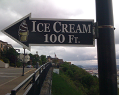

Photo Gallery


- 
About Pittsburgh
Pittsburgh is the second-largest city in the US Commonwealth of Pennsylvania and the county seat of Allegheny County. Regionally, it anchors the largest urban area of Appalachia and the Ohio River Valley, and nationally, it is the 22nd-largest urban area in the United States. The population of the city in 2010 was 305,704 while that of the seven-county metropolitan area stood at 2,356,285. Downtown Pittsburgh retains substantial economic influence, ranking at 25th in the nation for jobs within the urban core and 6th in job density.
Geography
The characteristic shape of Pittsburgh's central business district is a triangular tract carved by the confluence of the Allegheny and Monongahela rivers, which form the Ohio River. The city features 151 high-rise buildings, 446 bridges, two inclined railways, and a pre-revolutionary fortification. Pittsburgh is known colloquially as "The City of Bridges" and "The Steel City" for its many bridges and former steel manufacturing base.
The warmest month of the year in Pittsburgh is July, with a 24-hour average of 72.6°F. Conditions are often humid, and combined with the 90°F (occurring on an average of 8.4 days per annum), a considerable heat index arises.
More Information
-
One of many bridges in Pittsburgh
-
Downtown
Pittsburgh -
Ice cream beats the summer heat